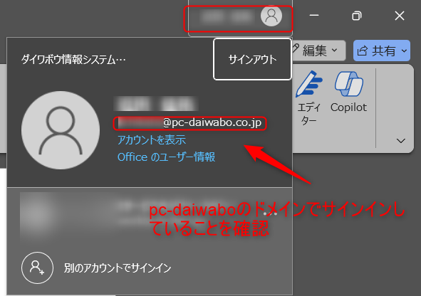
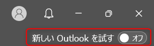
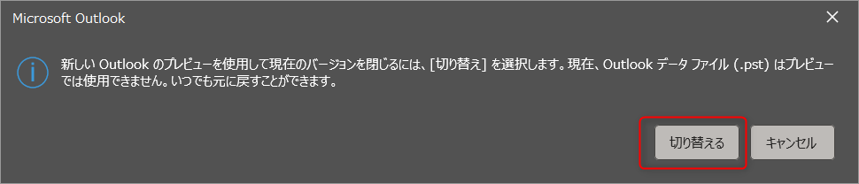

Copilot for Microsoft365 使用準備マニュアル
このマニュアルでは、ユーザーが Copilot for Microsoft365 を使用するための事前準備の手順を説明します。
1. 目次
2. Copilot for Microsoft365 事前準備
以下の手順に従って、Copilot for Microsoft365 の使用準備を行ってください。
2.1. 任意の Office アプリを起動する
-
スタートメニューから、使用したい Office アプリ（Word, Excel など）を選択し、起動します。
2.2. pc-daiwabo ドメインでサインインしていることを確認する
社内向けの場合はpc-daiwaboドメインの確認でいいが、外販の場合は表現を変える必要あり
-
Office アプリの右上にあるアカウント情報をクリックします。
-
表示されるアカウント情報で、
pc-daiwaboのドメインが含まれるメールアドレスでサインインしていることを確認します。
注: もし pc-daiwabo ドメインでサインインしていないない場合は、次のステップでサインインしてください。
2.3. サインインする
-
Office アプリの右上にある「サインイン」をクリックします。
-
画面の指示に従い、サインインします。
-
画面右上にユーザー名が表示されるとサインイン完了です。
2.4. Copilot アイコンがあることを確認する
-
Office アプリのツールバーを確認し、Copilot アイコンが表示されているか確認します。
注: もし Copilot アイコンが見つからない場合は、次のステップで Office アプリをバージョンアップしてください。
2.5. Office アプリをバージョンアップする
Copilot アイコンが表示されない場合、以下のステップを実施してください。
-
Office アプリの左上にある「ファイル」メニューをクリックします。
-
画面左下の「その他」>「アカウント」を選択します
-
「更新オプション」>「今すぐ更新」を選択して、アプリの更新を行います。
注: 更新には数分かかる場合があります。
2.6. 再度、Copilot アイコンがあることを確認する
-
Office アプリの再起動後、ツールバーを確認し、Copilot アイコンが表示されているか確認します。
以上で、事前準備は完了です。これで、Copilot for Microsoft365 を使用する準備が整いました。
続いて、ハンズオンの準備を行います。
3. ハンズオン 事前準備
以下の手順に従って、ハンズオンの事前準備を行ってください。
3.1. 提供ファイルのダウンロード
-
提供された URL にアクセスし、必要なファイルをダウンロードします。
-
ダウンロードしたファイルを確認します。
3.2. Word ファイルの OneDrive へのアップロード
-
OneDrive を開き、任意のフォルダで「新規追加」> 「ファイルのアップロード」ボタンをクリックします。
-
提供されたファイルの中から Word ファイルを選択し、アップロードします。
※ドラッグアンドドロップでもアップロード可能です
3.3. 「新しい Outlook」への切り替え
Copilot の一部の機能は「新しい Outlook」でのみ使用可能です
-
Outlook を開き、右上「新しい Outlook を試す」を選択し、新しい Outlook に切り替えます。

-
ポップアップが表示されるので、「切り替える」を選択します。

-
下記のポップアップが表示された場合は、そのまま「OK」をクリックします。
-
Outlook アプリが再起動され、新しい Outlook が開きます。画面右上の「新しい Outlook」トグルが ON になっていることを確認します。
3.4. 「新しい Teams」への切り替え
Microsoft Teams アプリにて 2024 年 3 月 31 日（日）以降に「従来の Teams アプリ（Microsoft Teams Classic）」から「新しい Teams」への変更が行われました。
Copilot を Teams で使用するためには、「新しい Teams」への切り替えが必要になります。
-
Teams を開き、右上の「…」>「新しい Teams」のトグルが ON になっていることを確認します。
注:既に「新しい Teams」が ON になっている場合は本節の実施は不要です。
-
Teams を開いたときに以下のポップアップが表示された場合、「今すぐ切り替え」をクリックします。
注:1,2 の事象がどちらも当てはまらない場合は以下のステップを実施してください。
-
アプリの左上にある「Teams を試す」をクリックします。
-
Teams アプリが再起動され、新しい Teams が開きます。右上の「…」>新しい Teams」のトグルが ON になっていることを確認します。
3.5. ハンズオン資料の準備
- ハンズオン資料を印刷するか、別端末(タブレットなど)へダウンロードします。
- マルチモニターを使用する場合は、事前に接続設定を完了させます。
以上で準備は完了です。当日はどうぞよろしくお願いいたします。